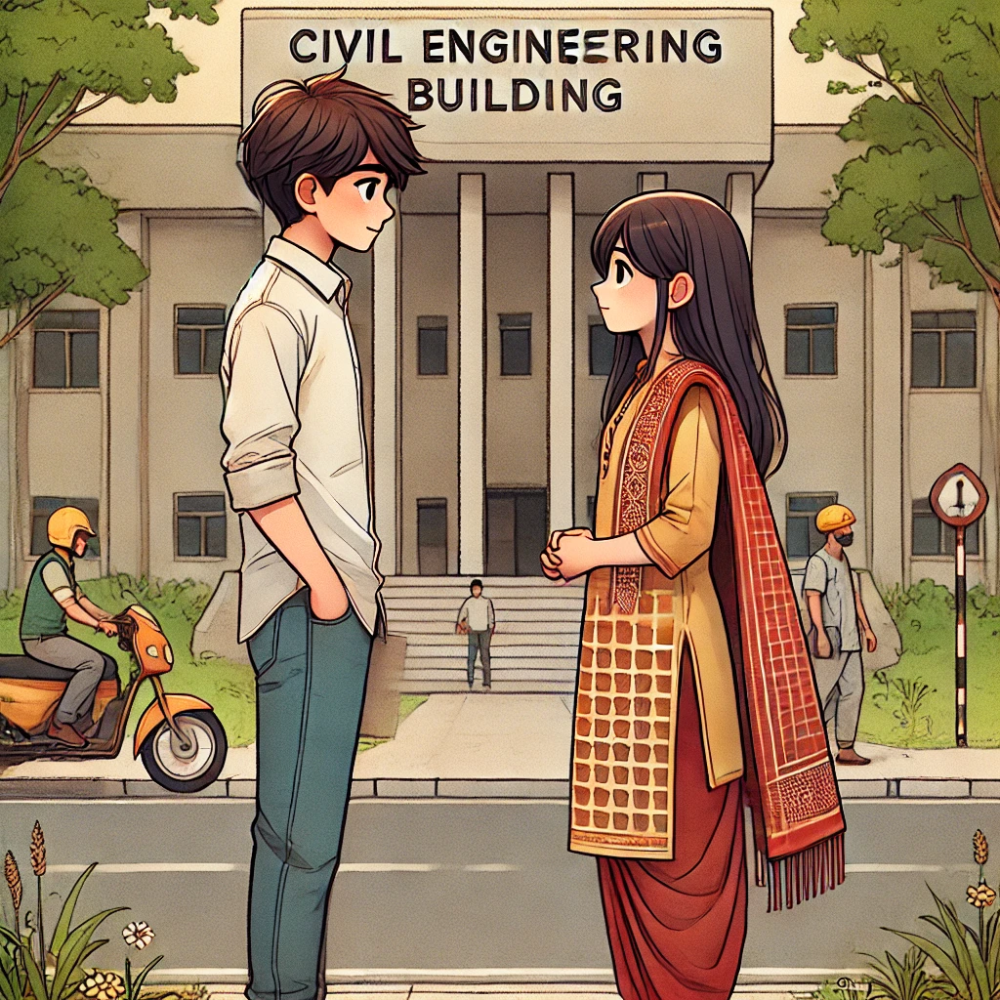
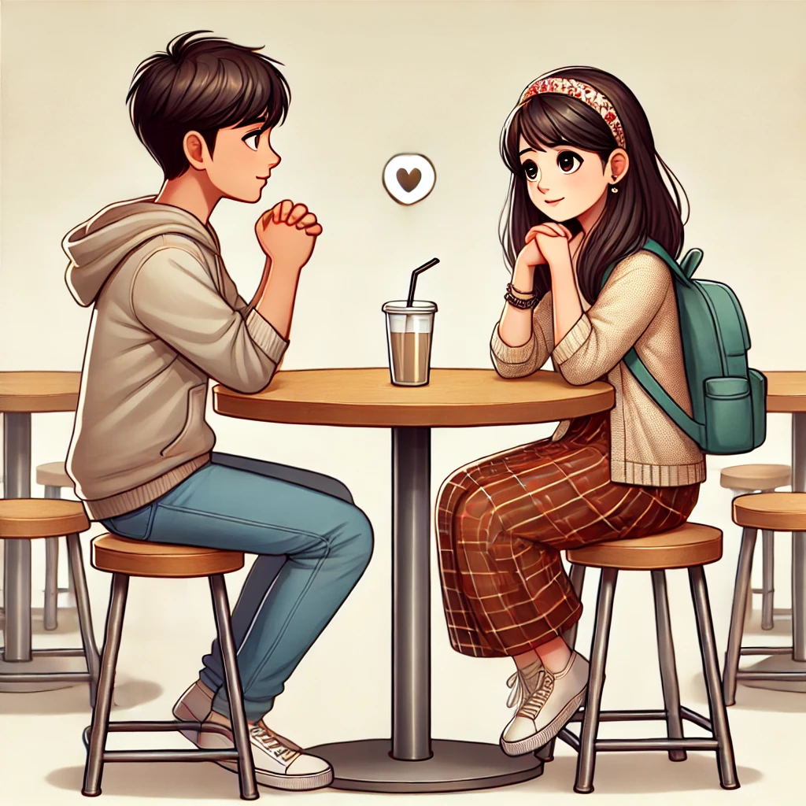
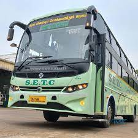
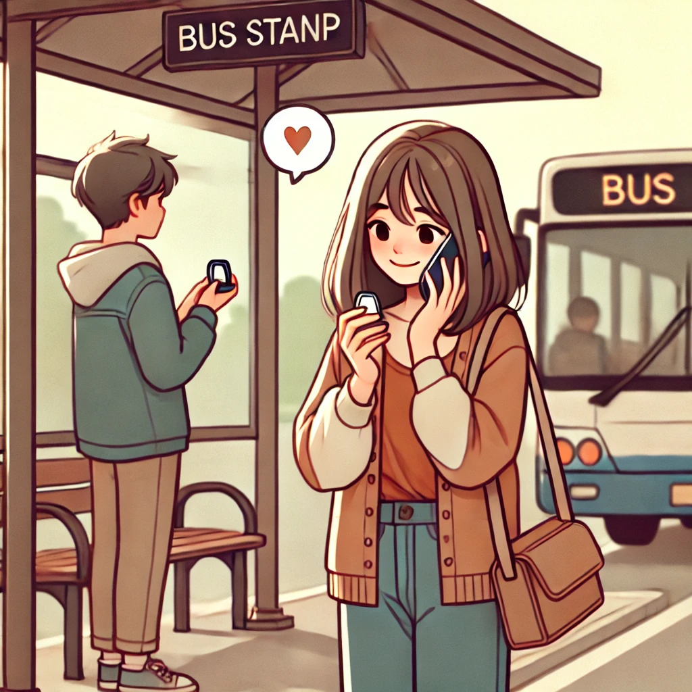
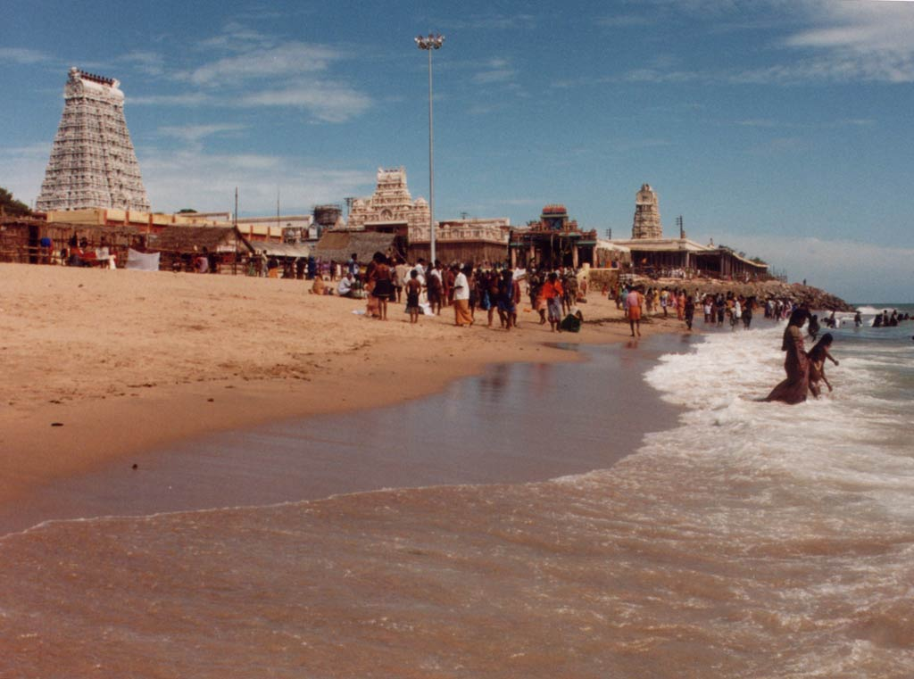

Dei thangam...etho ennala mudunjathu😉..konjam normal ah tha irukum adjust panniko..😇ipo tha learn pannen..just try tha mams..😅
Our Journey
First Met: December 9, 2022
Kutty ma...ğŸ˜
enaku nyabagam irukarathu write pandre...later update pannikalam civil dept munna tha namma first time meet pannom..priya tha introduce panna..1st time eh unna mass ah un frnds solli vachurunthanga athaum vachu fun tha..1st time ah irunthalum nalla tha pesunom but apo nammaku theriyathula ipdila agum nu...😂🤣
First purpose: June 30, 2023
Chella kuttiye...ğŸ˜
Ayo thangam..ithu first purpose la kidaiyathu da eruma..1st compalsion..unakulla enna pidichiruknu feel achu. ..ne sollame frnds ah irukanum nu tha iruntha..na tha unna pottu paduthi solliye aganum nu torture panni solla vachen..apo athu nana iruka koodathunu nachute tha keten ..but athu na tha..apo purila nallathuku tha nu..ne nalla pathupanu therium but,ne nalla irukanum nu ..na set aaga maten nu nanache..pavam onnume theriama un thangachi vera..🤣ne sonnapo etho oru feel enakulla happy um tha but accept panna mudiyatha situation.."ne epaume koodave irukanum nu nanachanu sonnala"..ğŸ’athu unmaaiyatula 🤣.apo unkitta enna ans panna theriyama thala kuninchen..therila ..ipo nanacha ennala nadanthuruku..🤣💖
First time Bus: 15 December 2023
Ennoda alagukutty..ğŸ˜
Fisrt time bus la illatha kootha adichom...koodave vara koodathunu solli aprm ne varalanu feel panni..na thaniya poiruken solli. 1st time bus la onna porapo ..ne tvl bus la erium na venam po nu sollite irunthe..v2laum ethum sollama vantha enkooda..entha thairiyathula vanthene therila ne..eruma..aprm bus la eri..konjam distance laye bus vera puncher..yarum pakka venam nu tha fast ah bus erinom..anga poi wait panna nxt bus la namma free ahpogamudiuma..illa yarachum ninnutu vara mari irukuma..neraiya qus..etho mari aitu ...ithula rain vera ..ellam intha universe senthu namma sethu vaika panuchunu ipo thane puriyuthu..athuku aprm oru chennai bus ..namma rendu peru matum
proposal by me: 10 April 2024
thangame....dei na first time purpose pannathu nyabagam iruka...🫶😍..unna pottu pada paduthi.. enna vela la panne...iruku ilanu evlo velai panne...aniku ni8 namma bus la vanthapo..ğŸ˜en birthday ku munnadi ..athuku munna tha da rendu perum eh oruthar oruthar miss pandratha feel pannom.. ne coimbatore pona po...na konjam gethu tha kattuven..oru feel um illatha mari😅..but enaku first time unna miss pandra feel ...epdi irunthuchu theriuma?..🧐koodave irukanum onnum therila pola...apo light ah enna ithu nu irunthuchu athellam onnum illa nu vitttute..but ne romba sollite irunthela..miss pandren miss pandren nu..enaku ennamo pannuchu ..na un frnds kooda ne nalla tha irupanu nanache ..but anga poirukave venam nu sonniya..ivlo va nu irunthuchu...aprm unna evlo thittunen na...price vanga kooda pogama apdi enna velai unaku..apo serious ah na unna summa frnds kaga sutha ponanu thappa nanache...romba kovapatten..but bus la ne enakaga oru gift pannala..antha gift ah vida ne enkitta vanguna thittu..enakaga dress eduka ne adicha koothu epa..sollave venam...athukaga la un mela love la illa...therila..romba nalave thonnite irunthuchu ...love ah nu theriyamaye..atha unkitta ketene what is love nu?last ah ne enna vittutu kilambano iruntha miss pandrapo feel aprom Ella feelings um senthu..anga bus stand la call pannapoye unkitta purpose pannene. ..atha na unaku panna 1st proposal thangam..aprm ilanu neraiya koothu adiche athellam venam ipo..🤣🤣🤣🤣😅😘🫶
First hug: 17 April 2024
dei..ennoda vaira kuttiye...namma first hug pathi nyabgam iruka da...na unaku "I love uâ¤" nu sonanthuku aprm..athellam onnum illa..friend tha nu sure ah solliten la...aprm neraiya days ku hostel laye irunthathu...neraiya problems ellam sethu etho mari irunthuchu😕...therila..yarachum hug panni alanum ğŸ˜...pola irunthuchu..enaku comfortable irukra mari oru hug🫂..venum nu thoonuchu...therila..yen unkitta kekanum nu thoonuchu nu...but kidacha nalla irukum nu thoonuchu.keten..neum 💖 onnum illanu ...tharen nu tha sonna..therila ...enna feel ithu nu...love panna bayam thangam...atha love eh venam nu feelings ah unkitta sollium aprm onnume illanu soliiten...intha hug matum pothum nu nanache..friendly ah...neum ethum nanaika matenu...aprm en birthday 🥳ni8 unga v2ku ponom..enaku light ah odambu sari illa..ithoda travel venam nu ponom la..anga vachu antha full 🌠moon munna hug 🫂 pannikitome..eppa enna feel...Ella worries um maranthu na ketta oru peace...nalla irunthuchu chlm...aprm ni8 onna sapdathu..ne pathu pathu enna kavinachathu..enaku omelette potathu..aprm ne na amma ellarum thoonga ponom ah..mosquito irunthathala enaku thookam avlo va varala..In between na restroom velaila poitu varala iruttula nadaka mudiyama slip agar po kal ah pidichala..atha marakave mudiyathu da🫶...dei..kirukka..epdi thanguna ne..🧐nxt day afternoon kilambom athu varai senthu cook panni saptu..etha pathium yosikama..entha worries um illama avlo happy..therila enaku apdi oru life venum nu thoonuchu da...love tha nu strong achu...🫂🫂🫂..🫶ğŸ˜ğŸ«‚🫂â¤
First Date: 7 Augest 2024
ennoda chella mama....en alagu...ithu namma first date love sonnathuku aprm....namma tiruchendur ponom ..ğŸ˜..anga irunthathu fullah ve beautiful memories..kovil la senthu ponathu...anga fullave crowd ah irukunu enna ne protect pannathu..etho oru kulantha mari enna pathukitta..eppa athu evlo nalla irunthuchu theriuma..Ella place laum enna pathu pathu thanguna da ne...ennoda chella Pillai...engaum enna vidala ne...seruppu porrapo kooda pathu pathu pathukitta..beach la nadanthu ponathu...ennoda jean ah ne kal Kitta madichu vittathu...again ipdi neraiya solliete polam da alagu...future la na neraiya add panndren...ipothaiku ivlo tha mudunjathu..etho ennoda try thangam🤣😅 ..epdi irunthalum adjust panniko...1st time ipdi pandren..oru complete website unakaga tha da 1st time..ennoda uyir da ne.....❤😍🫂🫂🫂